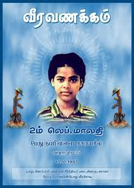

2ஆம் லெப். மாலதி வீர வரலாறு (முதல் பெண் மாவீரர்)

உண்மைப் பெயர்: சகாயசீலி பேரின்பநாயகம்
இயக்கப் பெயர்: 2ஆம் லெப். மாலதி
வீரச்சாவு தேதி: 10.10.1987
வீரச்சாவடைந்த இடம்: கோப்பாய், யாழ்ப்பாணம்
பிறப்பிடம்: மன்னார்
வரலாற்றுக்குறிப்பு
தமிழீழ விடுதலைப் போராட்ட வரலாற்றில் போர்க்களத்தில் எதிரியுடன் நேரடியாக மோதி வீரச்சாவடைந்த முதல் பெண் போராளி 2ஆம் லெப்டினன்ட் மாலதி ஆவார். இந்திய அமைதிப்படைக்கு எதிராக யாழ்ப்பாணத்தில் நடந்த சமரில் படுகாயமடைந்து, சயனைட் உட்கொண்டு வீரவரலாறானார். இவரது நினைவாகவே பெண்களின் முதன்மைப் படைப்பிரிவிற்கு மாலதி படைப்பிரிவு எனப் பெயரிடப்பட்டது.